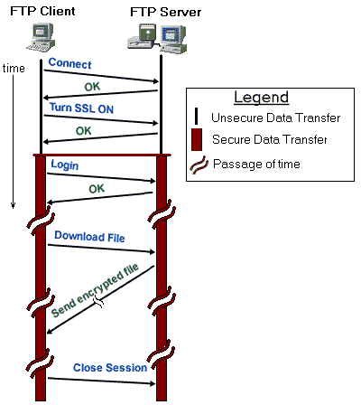
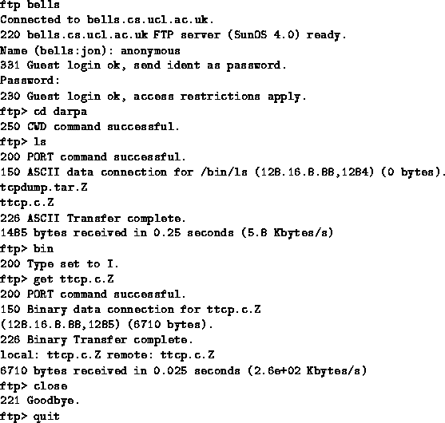
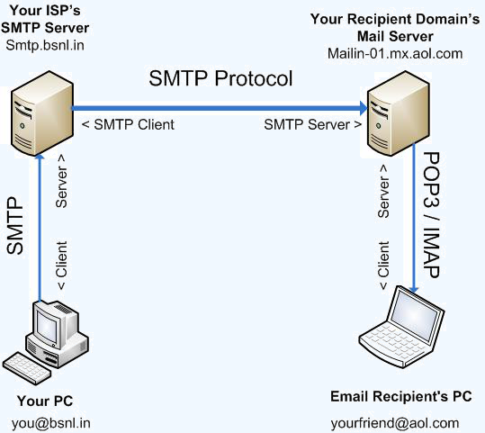
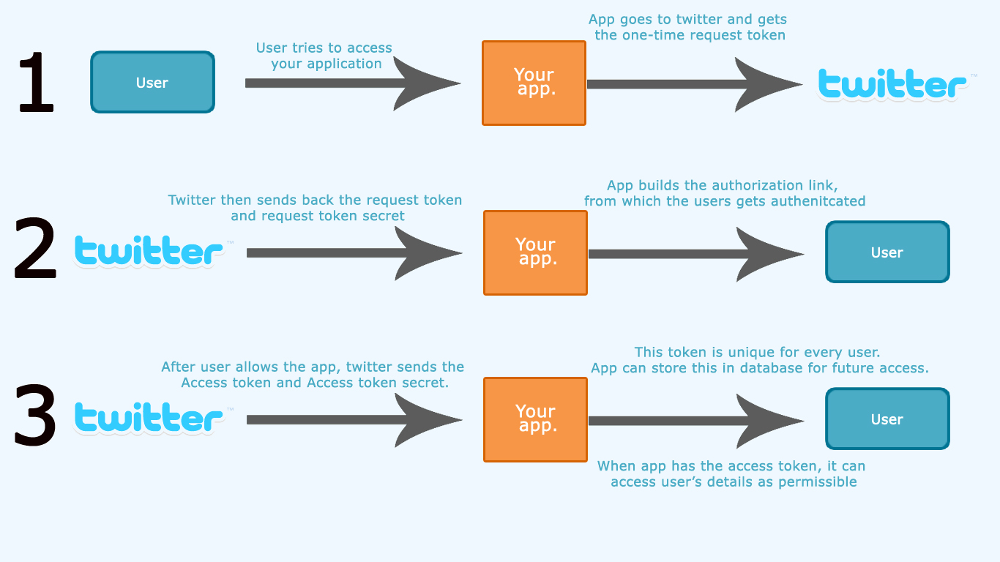

DAI, Servicios Internet
Desarrollo de Aplicaciones para Internet
Servicios Internet

File Transfer Protocol
En un procotolo para transferencia de archivos entre ordenadores, usando servidores y
clientes de FTP
Tiene la ventaja de poder transferir archivos muy grandes, con recuperación de errores
si se corta la conexión
|

|
File Transfer Protocol
Una sesión de FTP, usando un el cliente de consola 'ftp'

File Transfer Protocol
Se pueden transferir archivos usando FTP ,
con el módulo ftplib
import ftplib
# Anonymous por defecto, el password debe ser una dirección de email
ftp = ftplib.FTP ('sunsite.rediris.es', 'anonymous',
'anonymous@sunet.se') # loging
print "File List: "
files = ftp.dir ()
print files
ftp.cwd ("/sites/apache.org") # cambio de directorio
filename = 'README.html' # bajandose un archivo
file = open (filename, 'wb')
ftp.retrbinary ('RETR ' + filename, file.write)
file.close()
eMAIL
El e-mail utiliza dos o tres protocolos para transferir mesajes entre clientes y servidores de correo

eMAIL: Protocolos
Se utilizan:
eMail desde python
con el módulo estandar smtplib
import smtplib
server = smtplib.SMTP ('mi_servidor_de_smtp.com')
# Mensaje con cabeceras SMTP, separadas \n, y \n\n el contenido
msg = """
From: yo mismo
Subject: Hola
Que tal
Adios
"""
server.sendmail ("yo@mi_correo.com", "remitido@example.com", msg)
Si nuestro servidor accepta conexiones sin identificar y sin cifrar
eMail desde python
También con el módulo email
para MIME
con posibilidad de archivos adjuntos, codificaciones distintas del ascii, html, etc
import smtplib
from email.MIMEMultipart import MIMEMultipart
from email.MIMEText import MIMEText
fromaddr = "yo@correo.com"
toaddr = "el@example.com"
# Cabeceras
msg = MIMEMultipart ()
msg['From'] = fromaddr
msg['To'] = toaddr
msg['Subject'] = "Python email"
# Contenido
body = "Python test mail"
msg.attach (MIMEText (body, 'plain'))
# Enviando
server = smtplib.SMTP ('mi_servidor_smtp')
server.ehlo ()
server.starttls () # Para conexión cifrada
server.ehlo ()
server.login ("email_username", "password")
text = msg.as_string ()
server.sendmail(fromaddr, toaddr, text)
eMail desde Django
Django tiene
funciones
para enviar correo
# En settings.py
EMAIL_HOST = 'mi_servidor_smtp'
EMAIL_HOST_USER = 'yo@mi_correo.com'
EMAIL_HOST_PASSWORD = 'xxx'
EMAIL_PORT = 587 # usualmente
EMAIL_USE_TLS = True
DEFAULT_FROM_EMAIL = EMAIL_HOST_USER
# En views.py
from django.core.mail import send_mail
send_mail ('Subject here', 'Here is the message.',
'from@example.com', ['to@example.com'],
fail_silently=False)
Oauth2
Un protocolo para autentificar la aplicación y el usuario en redes sociales

Oauth
Es un protocolo para permitir el acceso a datos de terceros, sin usar su login/password directamente
En
oauth el:
- Cliente (o consumidor), accede a datos del
- Poseedor de los recursos (o usuario), en un
- Servidor (proveedor de servicios)
Google Maps
Google tiene un servicio de búsquedas en mapas que se accede desde
una
URL con parámetros GET